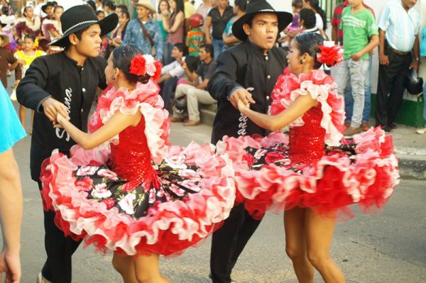

Танцуют все
Поют тоже
Это видимо врожденное, в генах. Поют девушки, поют ребята, поют суровые мужики, едва услышат по радио знакомую мелодию. Причем судя по всему, все мелодии, играемые на радио - знакомые. Я поражался, как в обеденное время мой персонал делал музыку погромче, и все подпевали абсолютно любую песню, которая в тот момент играла по радио.
Музыкальная культура Венесуэлы базируется на трех основных элементах: аборигенной, европейской (в основном испанской) и африканской музыкальных традициях. Основные мировые хиты на английском тоже популярны и их тоже поют, причем английского тут почти никто не знает, но песни как-то выучивают, хотя бы припев, прям как мы в школе, когда не было интернета, на слух.
Очень много музыкальных коллективов, из известных, например, группа из Каракаса Chino y Nacho, одни из немногих венесуэльцев, кто получал латинскую Грэмми, поют в стиле Реггетон. Есть классный клип с потрясающими видами Венесуэлы, там и Анхель и Лос Рокес, а еще в нем снялась Мисс Вселенная Дайана Мендоса.
В Маракае и Каракасе (2 города, где я жил) большое количество ночных клубов, в том числе и гей-дискотеки, там в этом плане не парятся, все в открытую. Мы в первый год не зная города, даже на одной по ошибке побывали. Но без девушек скучно, поэтому через полчаса поехали в традиционную. Танцевать умеют все, причем так, что наши клубные гоу-гоу позавидовали бы. Схема такая - сначала идет современная танцевальная музыка, реггетон, популярные хиты, а потом где-то после 2-х часов ночи начинается экзотика.
Ну-ка поподробней
Есть такой национальный танец хоропо, чем-то напоминает наш вальс. Музыку хоропо можно услышать везде - от метро Каракаса до нефтяных месторождений Маракайбо и пляжей Чорони. Школьники Венесуэлы учатся танцевать хоропо еще с начальных классов и демонстрируют свои достижения все время. У нас на стройке рабочие танцевали. И вот в ночных клубах тоже ее ставят и народ танцует национальные танцы. Выглядит это примерно так

наверх